<DOCUMENT>
<TYPE>EX-99.1
<SEQUENCE>2
<FILENAME>tm2510004d1_ex99-1.htm
<DESCRIPTION>EXHIBIT 99.1
<TEXT>
<html><head><TITLE></TITLE></head><body link=blue lang="EN-US"><div><div align="center"><div align="right" style="font: 10pt Times New Roman, Times, Serif"><B>Exhibit 99.1</B><div style="position:absolute; top:17px; right:64px; font-family:'Times New Roman'; font-size:10pt; font-weight:bold;"></div><table border="0" cellspacing="0" cellpadding="0" style="width:100%;border-collapse:collapse;"><tr style="page-break-inside:avoid;"><td width="92.3%" valign="top" style="padding:0in 5.4pt 0in 5.4pt;width:92.3%;"><p align="center" style="margin:0in 0in .0001pt;text-align:center;"></p></td><td width="7.7%" valign="middle" style="padding:0in 5.4pt 0in 5.4pt;width:7.7%;"><p style="margin:0in 0in .0001pt;"><font size="1" color="white" face="Arial" style="color:white;font-size:1.0pt;">FY 2024
Shareholder Letter</font></p></td></tr></table></div><div style="margin-left:2.6515151515151%;margin-right:2.65151515151515%;page-break-after:always;" ><div style="background-color:#000000;clear:both;height:2pt;border:0;margin:30pt 0pt 30pt 0pt;"></div></div><div align="center"><table border="0" cellspacing="0" cellpadding="0" style="width:100%;border-collapse:collapse;"><tr style="page-break-inside:avoid;"><td width="92.3%" valign="top" style="padding:0in 5.4pt 0in 5.4pt;width:92.3%;"><p align="center" style="margin:0in 0in .0001pt;text-align:center;">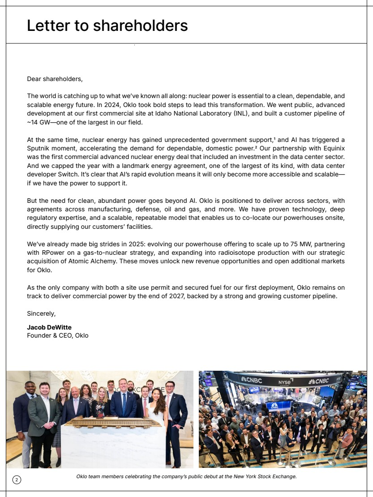</p></td><td width="7.7%" valign="middle" style="padding:0in 5.4pt 0in 5.4pt;width:7.7%;"><p style="margin:0in 0in .0001pt;"><font size="1" color="white" face="Arial" style="color:white;font-size:1.0pt;">2 Oklo team members celebrating the company&#x2019;s public debut at the New York Stock Exchange.
Dear shareholders,
The world is catching up to what we&#x2019;ve known all along: nuclear power is essential to a clean, dependable, and
scalable energy future. In 2024, Oklo took bold steps to lead this transformation. We went public, advanced
development at our first commercial site at Idaho National Laboratory (INL), and built a customer pipeline of
~14 GW&#x2014;one of the largest in our field.
At the same time, nuclear energy has gained unprecedented government support,1 and AI has triggered a
Sputnik moment, accelerating the demand for dependable, domestic power.2 Our partnership with Equinix
was the first commercial advanced nuclear energy deal that included an investment in the data center sector.
And we capped the year with a landmark energy agreement, one of the largest of its kind, with data center
developer Switch. It&#x2019;s clear that AI&#x2019;s rapid evolution means it will only become more accessible and scalable&#x2014;
if we have the power to support it.
But the need for clean, abundant power goes beyond AI. Oklo is positioned to deliver across sectors, with
agreements across manufacturing, defense, oil and gas, and more. We have proven technology, deep
regulatory expertise, and a scalable, repeatable model that enables us to co-locate our powerhouses onsite,
directly supplying our customers&#x2019; facilities.
We&#x2019;ve already made big strides in 2025: evolving our powerhouse offering to scale up to 75 MW, partnering
with RPower on a gas-to-nuclear strategy, and expanding into radioisotope production with our strategic
acquisition of Atomic Alchemy. These moves unlock new revenue opportunities and open additional markets
for Oklo.
As the only company with both a site use permit and secured fuel for our first deployment, Oklo remains on
track to deliver commercial power by the end of 2027, backed by a strong and growing customer pipeline.
Sincerely,
Jacob DeWitte
Founder &amp; CEO, Oklo
Letter to shareholders</font></p></td></tr></table></div><div style="margin-left:2.6515151515151%;margin-right:2.65151515151515%;page-break-after:always;" ><div style="background-color:#000000;clear:both;height:2pt;border:0;margin:30pt 0pt 30pt 0pt;"></div></div><div align="center"><table border="0" cellspacing="0" cellpadding="0" style="width:100%;border-collapse:collapse;"><tr style="page-break-inside:avoid;"><td width="92.3%" valign="top" style="padding:0in 5.4pt 0in 5.4pt;width:92.3%;"><p align="center" style="margin:0in 0in .0001pt;text-align:center;">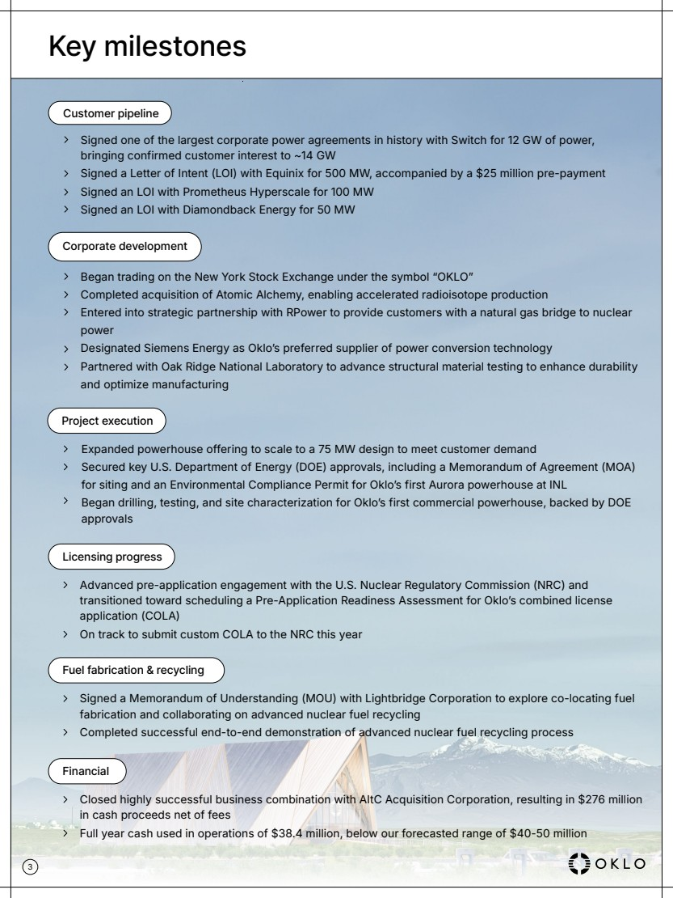</p></td><td width="7.7%" valign="middle" style="padding:0in 5.4pt 0in 5.4pt;width:7.7%;"><p style="margin:0in 0in .0001pt;"><font size="1" color="white" face="Arial" style="color:white;font-size:1.0pt;">3
Key milestones
Signed one of the largest corporate power agreements in history with Switch for 12 GW of power,
bringing confirmed customer interest to ~14 GW
Signed a Letter of Intent (LOI) with Equinix for 500 MW, accompanied by a $25 million pre-payment
Signed an LOI with Prometheus Hyperscale for 100 MW
Signed an LOI with Diamondback Energy for 50 MW
Customer pipeline
Began trading on the New York Stock Exchange under the symbol &#x201C;OKLO&#x201D;
Completed acquisition of Atomic Alchemy, enabling accelerated radioisotope production
Entered into strategic partnership with RPower to provide customers with a natural gas bridge to nuclear
power
Designated Siemens Energy as Oklo&#x2019;s preferred supplier of power conversion technology
Partnered with Oak Ridge National Laboratory to advance structural material testing to enhance durability
and optimize manufacturing
Corporate development
Expanded powerhouse offering to scale to a 75 MW design to meet customer demand
Secured key U.S. Department of Energy (DOE) approvals, including a Memorandum of Agreement (MOA)
for siting and an Environmental Compliance Permit for Oklo&#x2019;s first Aurora powerhouse at INL
Began drilling, testing, and site characterization for Oklo&#x2019;s first commercial powerhouse, backed by DOE
approvals
Project execution
Advanced pre-application engagement with the U.S. Nuclear Regulatory Commission (NRC) and
transitioned toward scheduling a Pre-Application Readiness Assessment for Oklo&#x2019;s combined license
application (COLA)
On track to submit custom COLA to the NRC this year
Licensing progress
Signed a Memorandum of Understanding (MOU) with Lightbridge Corporation to explore co-locating fuel
fabrication and collaborating on advanced nuclear fuel recycling
Completed successful end-to-end demonstration of advanced nuclear fuel recycling process
Fuel fabrication &amp; recycling
Closed highly successful business combination with AltC Acquisition Corporation, resulting in $276 million
in cash proceeds net of fees
Full year cash used in operations of $38.4 million, below our forecasted range of $40-50 million
Financial
3</font></p></td></tr></table></div><div style="margin-left:2.6515151515151%;margin-right:2.65151515151515%;page-break-after:always;" ><div style="background-color:#000000;clear:both;height:2pt;border:0;margin:30pt 0pt 30pt 0pt;"></div></div><div align="center"><table border="0" cellspacing="0" cellpadding="0" style="width:100%;border-collapse:collapse;"><tr style="page-break-inside:avoid;"><td width="92.3%" valign="top" style="padding:0in 5.4pt 0in 5.4pt;width:92.3%;"><p align="center" style="margin:0in 0in .0001pt;text-align:center;">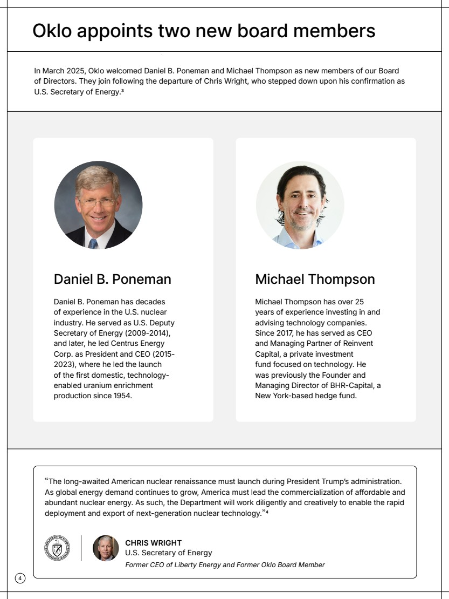</p></td><td width="7.7%" valign="middle" style="padding:0in 5.4pt 0in 5.4pt;width:7.7%;"><p style="margin:0in 0in .0001pt;"><font size="1" color="white" face="Arial" style="color:white;font-size:1.0pt;">4
In March 2025, Oklo welcomed Daniel B. Poneman and Michael Thompson as new members of our Board
of Directors. They join following the departure of Chris Wright, who stepped down upon his confirmation as
U.S. Secretary of Energy.3
Daniel B. Poneman
Daniel B. Poneman has decades
of experience in the U.S. nuclear
industry. He served as U.S. Deputy
Secretary of Energy (2009-2014),
and later, he led Centrus Energy
Corp. as President and CEO (2015-
2023), where he led the launch
of the first domestic, technology-enabled uranium enrichment
production since 1954.
Michael Thompson
Michael Thompson has over 25
years of experience investing in and
advising technology companies.
Since 2017, he has served as CEO
and Managing Partner of Reinvent
Capital, a private investment
fund focused on technology. He
was previously the Founder and
Managing Director of BHR-Capital, a
New York-based hedge fund.
&#x201C;The long-awaited American nuclear renaissance must launch during President Trump&#x2019;s administration.
As global energy demand continues to grow, America must lead the commercialization of affordable and
abundant nuclear energy. As such, the Department will work diligently and creatively to enable the rapid
deployment and export of next-generation nuclear technology.&#x201D;4
CHRIS WRIGHT
U.S. Secretary of Energy
Former CEO of Liberty Energy and Former Oklo Board Member
Oklo appoints two new board members</font></p></td></tr></table></div><div style="margin-left:2.6515151515151%;margin-right:2.65151515151515%;page-break-after:always;" ><div style="background-color:#000000;clear:both;height:2pt;border:0;margin:30pt 0pt 30pt 0pt;"></div></div><div align="center"><table border="0" cellspacing="0" cellpadding="0" style="width:100%;border-collapse:collapse;"><tr style="page-break-inside:avoid;"><td width="92.3%" valign="top" style="padding:0in 5.4pt 0in 5.4pt;width:92.3%;"><p align="center" style="margin:0in 0in .0001pt;text-align:center;">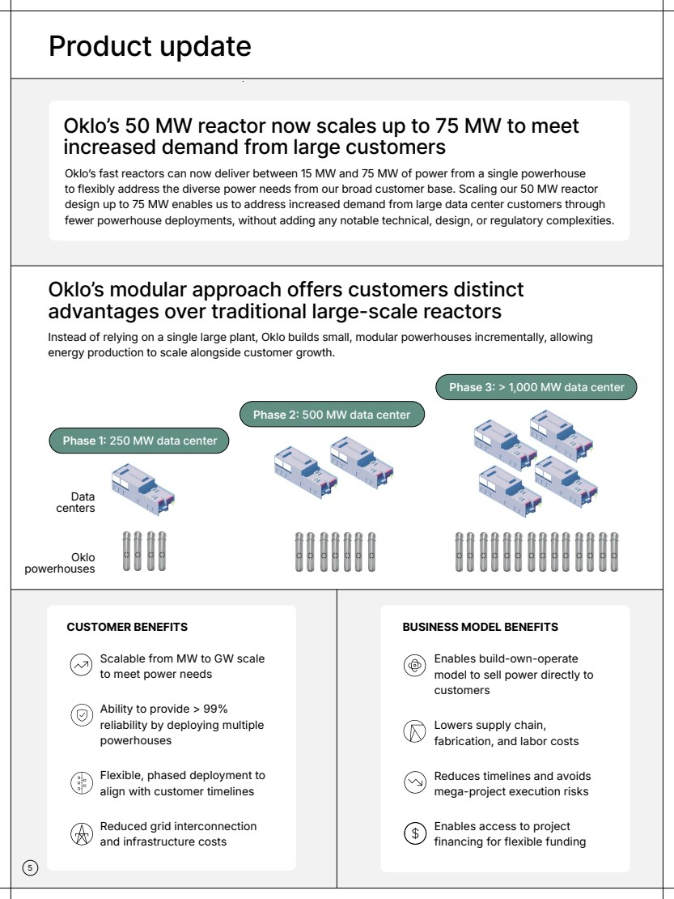</p></td><td width="7.7%" valign="middle" style="padding:0in 5.4pt 0in 5.4pt;width:7.7%;"><p style="margin:0in 0in .0001pt;"><font size="1" color="white" face="Arial" style="color:white;font-size:1.0pt;">5
Oklo&#x2019;s fast reactors can now deliver between 15 MW and 75 MW of power from a single powerhouse
to flexibly address the diverse power needs from our broad customer base. Scaling our 50 MW reactor
design up to 75 MW enables us to address increased demand from large data center customers through
fewer powerhouse deployments, without adding any notable technical, design, or regulatory complexities.
Oklo&#x2019;s 50 MW reactor now scales up to 75 MW to meet
increased demand from large customers
Oklo&#x2019;s modular approach offers customers distinct
advantages over traditional large-scale reactors
Instead of relying on a single large plant, Oklo builds small, modular powerhouses incrementally, allowing
energy production to scale alongside customer growth.
Scalable from MW to GW scale
to meet power needs
Ability to provide &gt; 99%
reliability by deploying multiple
powerhouses
Flexible, phased deployment to
align with customer timelines
Reduced grid interconnection
and infrastructure costs
Enables build-own-operate
model to sell power directly to
customers
Lowers supply chain,
fabrication, and labor costs
Reduces timelines and avoids
mega-project execution risks
Enables access to project
financing for flexible funding
Phase 1: 250 MW data center
Phase 2: 500 MW data center
Phase 3: &gt; 1,000 MW data center
Data
centers
Oklo
powerhouses
CUSTOMER BENEFITS BUSINESS MODEL BENEFITS
5
Product update</font></p></td></tr></table></div><div style="margin-left:2.6515151515151%;margin-right:2.65151515151515%;page-break-after:always;" ><div style="background-color:#000000;clear:both;height:2pt;border:0;margin:30pt 0pt 30pt 0pt;"></div></div><div align="center"><table border="0" cellspacing="0" cellpadding="0" style="width:100%;border-collapse:collapse;"><tr style="page-break-inside:avoid;"><td width="92.3%" valign="top" style="padding:0in 5.4pt 0in 5.4pt;width:92.3%;"><p align="center" style="margin:0in 0in .0001pt;text-align:center;">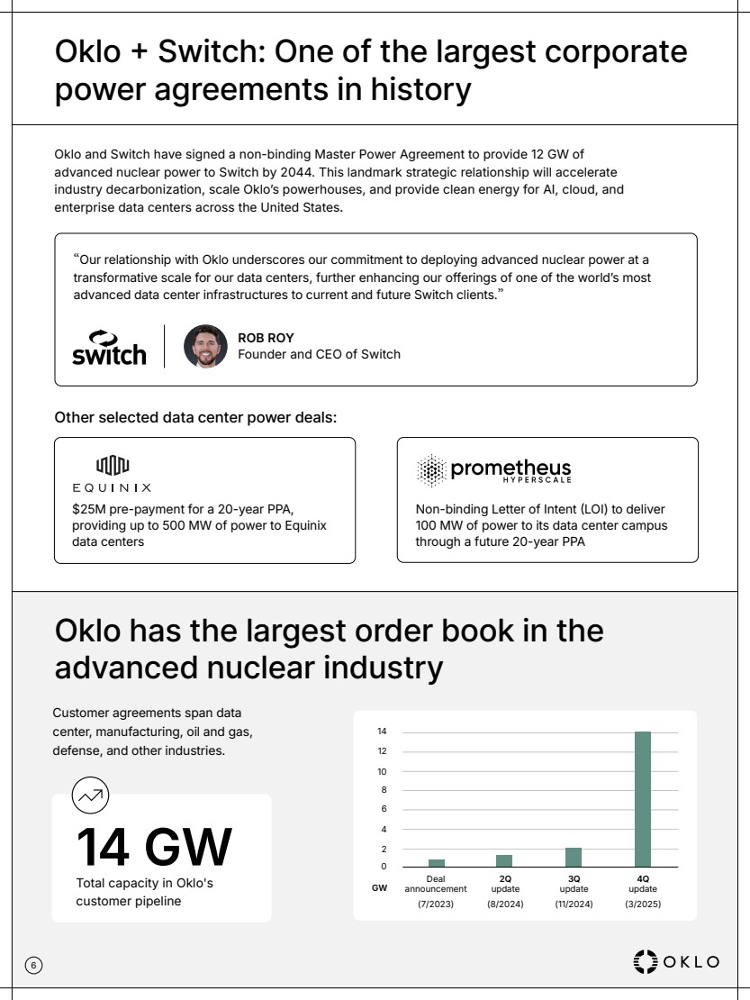</p></td><td width="7.7%" valign="middle" style="padding:0in 5.4pt 0in 5.4pt;width:7.7%;"><p style="margin:0in 0in .0001pt;"><font size="1" color="white" face="Arial" style="color:white;font-size:1.0pt;">6
Total capacity in Oklo's
customer pipeline
14 GW
Other selected data center power deals:
$25M pre-payment for a 20-year PPA,
providing up to 500 MW of power to Equinix
data centers
Non-binding Letter of Intent (LOI) to deliver
100 MW of power to its data center campus
through a future 20-year PPA
Customer agreements span data
center, manufacturing, oil and gas,
defense, and other industries.
&#x201C;Our relationship with Oklo underscores our commitment to deploying advanced nuclear power at a
transformative scale for our data centers, further enhancing our offerings of one of the world&#x2019;s most
advanced data center infrastructures to current and future Switch clients.&#x201D;
ROB ROY
Founder and CEO of Switch
Oklo + Switch: One of the largest corporate
power agreements in history
Oklo has the largest order book in the
advanced nuclear industry
Oklo and Switch have signed a non-binding Master Power Agreement to provide 12 GW of
advanced nuclear power to Switch by 2044. This landmark strategic relationship will accelerate
industry decarbonization, scale Oklo&#x2019;s powerhouses, and provide clean energy for AI, cloud, and
enterprise data centers across the United States.
0
2
4
6
8
10
Deal
announcement
(7/2023)
2Q
update
(8/2024)
3Q
update
(11/2024)
4Q
update
(3/2025)
12
14
GW
6</font></p></td></tr></table></div><div style="margin-left:2.6515151515151%;margin-right:2.65151515151515%;page-break-after:always;" ><div style="background-color:#000000;clear:both;height:2pt;border:0;margin:30pt 0pt 30pt 0pt;"></div></div><div align="center"><table border="0" cellspacing="0" cellpadding="0" style="width:100%;border-collapse:collapse;"><tr style="page-break-inside:avoid;"><td width="92.3%" valign="top" style="padding:0in 5.4pt 0in 5.4pt;width:92.3%;"><p align="center" style="margin:0in 0in .0001pt;text-align:center;">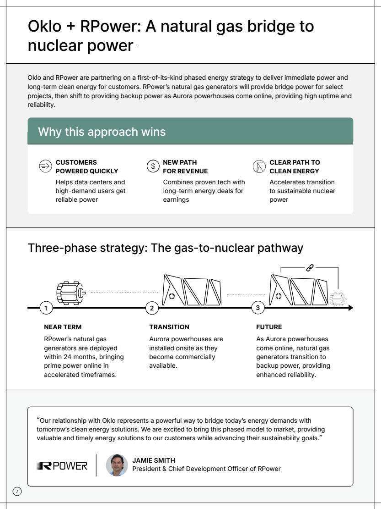</p></td><td width="7.7%" valign="middle" style="padding:0in 5.4pt 0in 5.4pt;width:7.7%;"><p style="margin:0in 0in .0001pt;"><font size="1" color="white" face="Arial" style="color:white;font-size:1.0pt;">Oklo + RPower: A natural gas bridge to
nuclear power
Oklo and RPower are partnering on a first-of-its-kind phased energy strategy to deliver immediate power and
long-term clean energy for customers. RPower&#x2019;s natural gas generators will provide bridge power for select
projects, then shift to providing backup power as Aurora powerhouses come online, providing high uptime and
reliability.
NEAR TERM
RPower&#x2019;s natural gas
generators are deployed
within 24 months, bringing
prime power online in
accelerated timeframes.
TRANSITION
Aurora powerhouses are
installed onsite as they
become commercially
available.
FUTURE
As Aurora powerhouses
come online, natural gas
generators transition to
backup power, providing
enhanced reliability.
Why this approach wins
NEW PATH
FOR REVENUE
CLEAR PATH TO
CLEAN ENERGY
Combines proven tech with
long-term energy deals for
earnings
Accelerates transition
to sustainable nuclear
power
CUSTOMERS
POWERED QUICKLY
Helps data centers and
high-demand users get
reliable power
1 2 3
Three-phase strategy: The gas-to-nuclear pathway
&#x201C;Our relationship with Oklo represents a powerful way to bridge today&#x2019;s energy demands with
tomorrow&#x2019;s clean energy solutions. We are excited to bring this phased model to market, providing
valuable and timely energy solutions to our customers while advancing their sustainability goals.&#x201D;
JAMIE SMITH
President &amp; Chief Development Officer of RPower
7</font></p></td></tr></table></div><div style="margin-left:2.6515151515151%;margin-right:2.65151515151515%;page-break-after:always;" ><div style="background-color:#000000;clear:both;height:2pt;border:0;margin:30pt 0pt 30pt 0pt;"></div></div><div align="center"><table border="0" cellspacing="0" cellpadding="0" style="width:100%;border-collapse:collapse;"><tr style="page-break-inside:avoid;"><td width="92.3%" valign="top" style="padding:0in 5.4pt 0in 5.4pt;width:92.3%;"><p align="center" style="margin:0in 0in .0001pt;text-align:center;">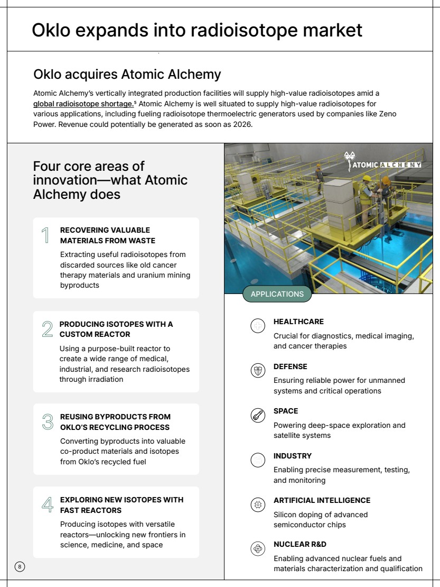</p></td><td width="7.7%" valign="middle" style="padding:0in 5.4pt 0in 5.4pt;width:7.7%;"><p style="margin:0in 0in .0001pt;"><font size="1" color="white" face="Arial" style="color:white;font-size:1.0pt;">Atomic Alchemy&#x2019;s vertically integrated production facilities will supply high-value radioisotopes amid a
global radioisotope shortage.5 Atomic Alchemy is well situated to supply high-value radioisotopes for
various applications, including fueling radioisotope thermoelectric generators used by companies like Zeno
Power. Revenue could potentially be generated as soon as 2026.
APPLICATIONS
Oklo acquires Atomic Alchemy
SPACE
Powering deep-space exploration and
satellite systems
HEALTHCARE
Crucial for diagnostics, medical imaging,
and cancer therapies
DEFENSE
Ensuring reliable power for unmanned
systems and critical operations
ARTIFICIAL INTELLIGENCE
Silicon doping of advanced
semiconductor chips
INDUSTRY
Enabling precise measurement, testing,
and monitoring
8
Oklo expands into radioisotope market
Four core areas of
innovation&#x2014;what Atomic
Alchemy does
PRODUCING ISOTOPES WITH A
CUSTOM REACTOR
Using a purpose-built reactor to
create a wide range of medical,
industrial, and research radioisotopes
through irradiation
2
RECOVERING VALUABLE
MATERIALS FROM WASTE
Extracting useful radioisotopes from
discarded sources like old cancer
therapy materials and uranium mining
byproducts
1
REUSING BYPRODUCTS FROM
OKLO&#x2019;S RECYCLING PROCESS
Converting byproducts into valuable
co-product materials and isotopes
from Oklo&#x2019;s recycled fuel
3
EXPLORING NEW ISOTOPES WITH
FAST REACTORS
Producing isotopes with versatile
reactors&#x2014;unlocking new frontiers in
science, medicine, and space
4
NUCLEAR R&amp;D
Enabling advanced nuclear fuels and
materials characterization and qualification</font></p></td></tr></table></div><div style="margin-left:2.6515151515151%;margin-right:2.65151515151515%;page-break-after:always;" ><div style="background-color:#000000;clear:both;height:2pt;border:0;margin:30pt 0pt 30pt 0pt;"></div></div><div align="center"><table border="0" cellspacing="0" cellpadding="0" style="width:100%;border-collapse:collapse;"><tr style="page-break-inside:avoid;"><td width="92.3%" valign="top" style="padding:0in 5.4pt 0in 5.4pt;width:92.3%;"><p align="center" style="margin:0in 0in .0001pt;text-align:center;">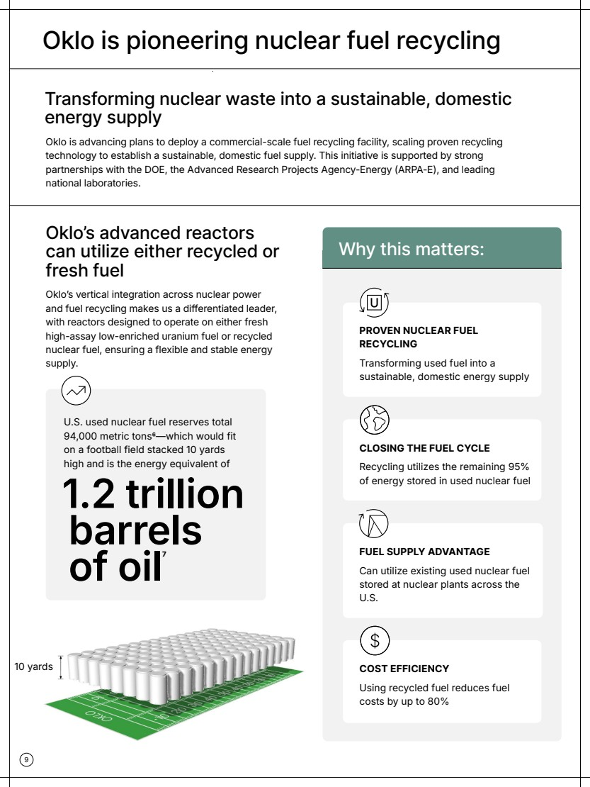</p></td><td width="7.7%" valign="middle" style="padding:0in 5.4pt 0in 5.4pt;width:7.7%;"><p style="margin:0in 0in .0001pt;"><font size="1" color="white" face="Arial" style="color:white;font-size:1.0pt;">9
Oklo is advancing plans to deploy a commercial-scale fuel recycling facility, scaling proven recycling
technology to establish a sustainable, domestic fuel supply. This initiative is supported by strong
partnerships with the DOE, the Advanced Research Projects Agency-Energy (ARPA-E), and leading
national laboratories.
Transforming nuclear waste into a sustainable, domestic
energy supply
1.2 trillion
 barrels
 of oil7
U.S. used nuclear fuel reserves total
94,000 metric tons6&#x2014;which would fit
on a football field stacked 10 yards
high and is the energy equivalent of
Oklo&#x2019;s advanced reactors
can utilize either recycled or
fresh fuel
Oklo&#x2019;s vertical integration across nuclear power
and fuel recycling makes us a differentiated leader,
with reactors designed to operate on either fresh
high-assay low-enriched uranium fuel or recycled
nuclear fuel, ensuring a flexible and stable energy
supply.
10 yards
Why this matters:
FUEL SUPPLY ADVANTAGE
Can utilize existing used nuclear fuel
stored at nuclear plants across the
U.S.
PROVEN NUCLEAR FUEL
RECYCLING
Transforming used fuel into a
sustainable, domestic energy supply
CLOSING THE FUEL CYCLE
Recycling utilizes the remaining 95%
of energy stored in used nuclear fuel
COST EFFICIENCY
Using recycled fuel reduces fuel
costs by up to 80%
Oklo is pioneering nuclear fuel recycling</font></p></td></tr></table></div><div style="margin-left:2.6515151515151%;margin-right:2.65151515151515%;page-break-after:always;" ><div style="background-color:#000000;clear:both;height:2pt;border:0;margin:30pt 0pt 30pt 0pt;"></div></div><div align="center"><table border="0" cellspacing="0" cellpadding="0" style="width:100%;border-collapse:collapse;"><tr style="page-break-inside:avoid;"><td width="92.3%" valign="top" style="padding:0in 5.4pt 0in 5.4pt;width:92.3%;"><p align="center" style="margin:0in 0in .0001pt;text-align:center;">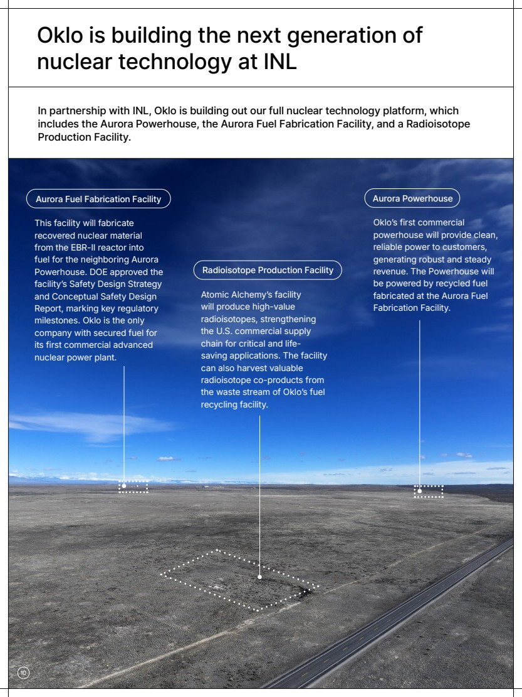</p></td><td width="7.7%" valign="middle" style="padding:0in 5.4pt 0in 5.4pt;width:7.7%;"><p style="margin:0in 0in .0001pt;"><font size="1" color="white" face="Arial" style="color:white;font-size:1.0pt;">10
Oklo is building the next generation of
nuclear technology at INL
Aurora Fuel Fabrication Facility
This facility will fabricate
recovered nuclear material
from the EBR-II reactor into
fuel for the neighboring Aurora
Powerhouse. DOE approved the
facility&#x2019;s Safety Design Strategy
and Conceptual Safety Design
Report, marking key regulatory
milestones. Oklo is the only
company with secured fuel for
its first commercial advanced
nuclear power plant.
Aurora Powerhouse
Oklo&#x2019;s first commercial
powerhouse will provide clean,
reliable power to customers,
generating robust and steady
revenue. The Powerhouse will
be powered by recycled fuel
fabricated at the Aurora Fuel
Fabrication Facility.
Radioisotope Production Facility
Atomic Alchemy&#x2019;s facility
will produce high-value
radioisotopes, strengthening
the U.S. commercial supply
chain for critical and life-saving applications. The facility
can also harvest valuable
radioisotope co-products from
the waste stream of Oklo&#x2019;s fuel
recycling facility.
In partnership with INL, Oklo is building out our full nuclear technology platform, which
includes the Aurora Powerhouse, the Aurora Fuel Fabrication Facility, and a Radioisotope
Production Facility.
10</font></p></td></tr></table></div><div style="margin-left:2.6515151515151%;margin-right:2.65151515151515%;page-break-after:always;" ><div style="background-color:#000000;clear:both;height:2pt;border:0;margin:30pt 0pt 30pt 0pt;"></div></div><div align="center"><table border="0" cellspacing="0" cellpadding="0" style="width:100%;border-collapse:collapse;"><tr style="page-break-inside:avoid;"><td width="92.3%" valign="top" style="padding:0in 5.4pt 0in 5.4pt;width:92.3%;"><p align="center" style="margin:0in 0in .0001pt;text-align:center;">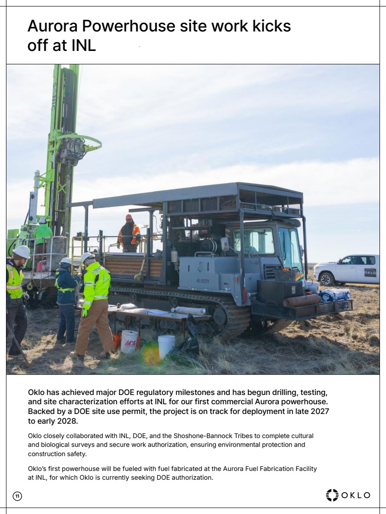</p></td><td width="7.7%" valign="middle" style="padding:0in 5.4pt 0in 5.4pt;width:7.7%;"><p style="margin:0in 0in .0001pt;"><font size="1" color="white" face="Arial" style="color:white;font-size:1.0pt;">11
Aurora Powerhouse site work kicks
off at INL
Oklo has achieved major DOE regulatory milestones and has begun drilling, testing,
and site characterization efforts at INL for our first commercial Aurora powerhouse.
Backed by a DOE site use permit, the project is on track for deployment in late 2027
to early 2028.
Oklo closely collaborated with INL, DOE, and the Shoshone-Bannock Tribes to complete cultural
and biological surveys and secure work authorization, ensuring environmental protection and
construction safety.
Oklo&#x2019;s first powerhouse will be fueled with fuel fabricated at the Aurora Fuel Fabrication Facility
at INL, for which Oklo is currently seeking DOE authorization.
11</font></p></td></tr></table></div><div style="margin-left:2.6515151515151%;margin-right:2.65151515151515%;page-break-after:always;" ><div style="background-color:#000000;clear:both;height:2pt;border:0;margin:30pt 0pt 30pt 0pt;"></div></div><div align="center"><table border="0" cellspacing="0" cellpadding="0" style="width:100%;border-collapse:collapse;"><tr style="page-break-inside:avoid;"><td width="92.3%" valign="top" style="padding:0in 5.4pt 0in 5.4pt;width:92.3%;"><p align="center" style="margin:0in 0in .0001pt;text-align:center;">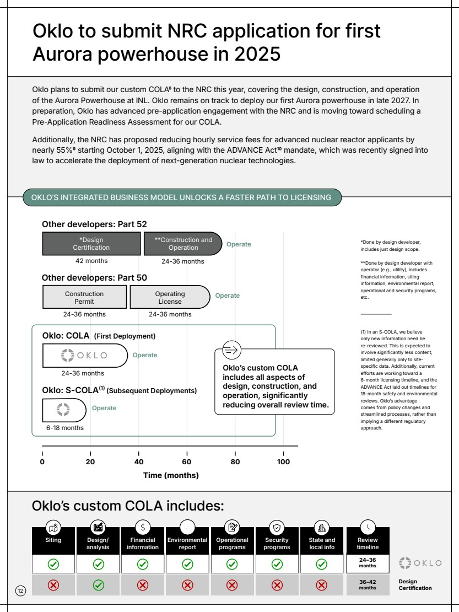</p></td><td width="7.7%" valign="middle" style="padding:0in 5.4pt 0in 5.4pt;width:7.7%;"><p style="margin:0in 0in .0001pt;"><font size="1" color="white" face="Arial" style="color:white;font-size:1.0pt;">12
Oklo to submit NRC application for first
Aurora powerhouse in 2025
Oklo&#x2019;s custom COLA includes:
20 40 60 80 100
Time (months)
Design
Certification
24&#x2013;36
months
36&#x2013;42
months
*Done by design developer,
includes just design scope.
**Done by design developer with
operator (e.g., utility), includes
financial information, siting
information, environmental report,
operational and security programs,
etc.
(1) In an S-COLA, we believe
only new information need be
re-reviewed. This is expected to
involve significantly less content,
limited generally only to site-specific data. Additionally, current
efforts are working toward a
6-month licensing timeline, and the
ADVANCE Act laid out timelines for
18-month safety and environmental
reviews. Oklo&#x2019;s advantage
comes from policy changes and
streamlined processes, rather than
implying a different regulatory
approach.
Oklo plans to submit our custom COLA8 to the NRC this year, covering the design, construction, and operation
of the Aurora Powerhouse at INL. Oklo remains on track to deploy our first Aurora powerhouse in late 2027. In
preparation, Oklo has advanced pre-application engagement with the NRC and is moving toward scheduling a
Pre-Application Readiness Assessment for our COLA.
Additionally, the NRC has proposed reducing hourly service fees for advanced nuclear reactor applicants by
nearly 55%9 starting October 1, 2025, aligning with the ADVANCE Act10 mandate, which was recently signed into
law to accelerate the deployment of next-generation nuclear technologies.
Other developers: Part 50
Construction
Permit
Operating
License Operate
24-36 months 24-36 months
Other developers: Part 52
*Design
Certification
**Construction and
Operation Operate
42 months 24-36 months
12
24-36 months
Oklo: S-COLA(1) (Subsequent Deployments)
Operate
6-18 months
Oklo: COLA (First Deployment)
Operate
0
OKLO&#x2019;S INTEGRATED BUSINESS MODEL UNLOCKS A FASTER PATH TO LICENSING
Oklo&#x2019;s custom COLA
includes all aspects of
design, construction, and
operation, significantly
reducing overall review time.
Siting Design/
analysis
Financial
information
Environmental
report
Operational
programs
Security
programs
State and
local info
Review
timeline</font></p></td></tr></table></div><div style="margin-left:2.6515151515151%;margin-right:2.65151515151515%;page-break-after:always;" ><div style="background-color:#000000;clear:both;height:2pt;border:0;margin:30pt 0pt 30pt 0pt;"></div></div><div align="center"><table border="0" cellspacing="0" cellpadding="0" style="width:100%;border-collapse:collapse;"><tr style="page-break-inside:avoid;"><td width="92.3%" valign="top" style="padding:0in 5.4pt 0in 5.4pt;width:92.3%;"><p align="center" style="margin:0in 0in .0001pt;text-align:center;">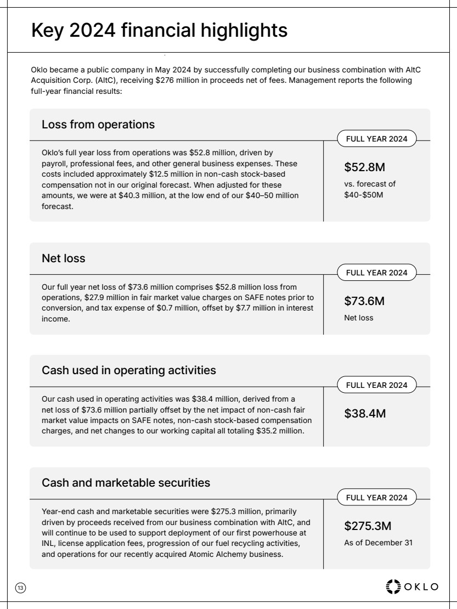</p></td><td width="7.7%" valign="middle" style="padding:0in 5.4pt 0in 5.4pt;width:7.7%;"><p style="margin:0in 0in .0001pt;"><font size="1" color="white" face="Arial" style="color:white;font-size:1.0pt;">13
Key 2024 financial highlights
Oklo became a public company in May 2024 by successfully completing our business combination with AltC
Acquisition Corp. (AltC), receiving $276 million in proceeds net of fees. Management reports the following
full-year financial results:
Oklo&#x2019;s full year loss from operations was $52.8 million, driven by
payroll, professional fees, and other general business expenses. These
costs included approximately $12.5 million in non-cash stock-based
compensation not in our original forecast. When adjusted for these
amounts, we were at $40.3 million, at the low end of our $40&#x2013;50 million
forecast.
vs. forecast of
$40-$50M
Loss from operations
$52.8M
FULL YEAR 2024
Our full year net loss of $73.6 million comprises $52.8 million loss from
operations, $27.9 million in fair market value charges on SAFE notes prior to
conversion, and tax expense of $0.7 million, offset by $7.7 million in interest
income. Net loss
Net loss
$73.6M
FULL YEAR 2024
Our cash used in operating activities was $38.4 million, derived from a
net loss of $73.6 million partially offset by the net impact of non-cash fair
market value impacts on SAFE notes, non-cash stock-based compensation
charges, and net changes to our working capital all totaling $35.2 million.
Cash used in operating activities
$38.4M
FULL YEAR 2024
Year-end cash and marketable securities were $275.3 million, primarily
driven by proceeds received from our business combination with AltC, and
will continue to be used to support deployment of our first powerhouse at
INL, license application fees, progression of our fuel recycling activities,
and operations for our recently acquired Atomic Alchemy business.
As of December 31
Cash and marketable securities
$275.3M
FULL YEAR 2024</font></p></td></tr></table></div><div style="margin-left:2.6515151515151%;margin-right:2.65151515151515%;page-break-after:always;" ><div style="background-color:#000000;clear:both;height:2pt;border:0;margin:30pt 0pt 30pt 0pt;"></div></div><div align="center"><table border="0" cellspacing="0" cellpadding="0" style="width:100%;border-collapse:collapse;"><tr style="page-break-inside:avoid;"><td width="92.3%" valign="top" style="padding:0in 5.4pt 0in 5.4pt;width:92.3%;"><p align="center" style="margin:0in 0in .0001pt;text-align:center;">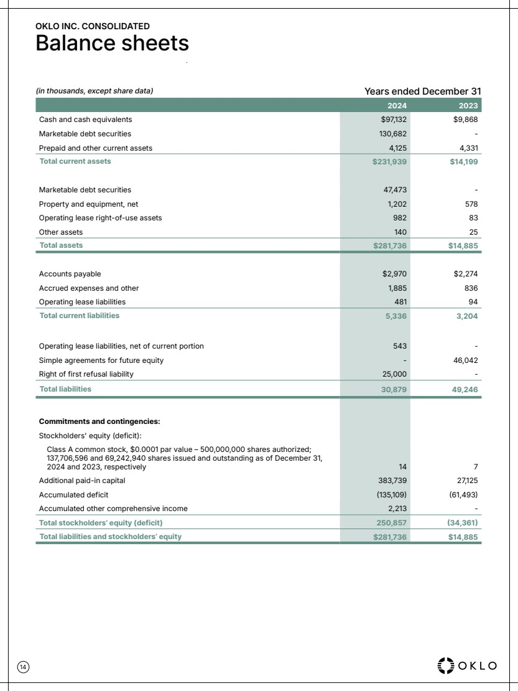</p></td><td width="7.7%" valign="middle" style="padding:0in 5.4pt 0in 5.4pt;width:7.7%;"><p style="margin:0in 0in .0001pt;"><font size="1" color="white" face="Arial" style="color:white;font-size:1.0pt;">14
2024 2023
Cash and cash equivalents $97,132 $9,868
Marketable debt securities 130,682 -
Prepaid and other current assets 4,125 4,331
Total current assets $231,939 $14,199
Marketable debt securities 47,473 -
Property and equipment, net 1,202 578
Operating lease right-of-use assets 982 83
Other assets 140 25
Total assets $281,736 $14,885
Accounts payable $2,970 $2,274
Accrued expenses and other 1,885 836
Operating lease liabilities 481 94
Total current liabilities 5,336 3,204
Operating lease liabilities, net of current portion 543 -
Simple agreements for future equity - 46,042
Right of first refusal liability 25,000 -
Total liabilities 30,879 49,246
Commitments and contingencies:
Stockholders' equity (deficit):
Class A common stock, $0.0001 par value &#x2013; 500,000,000 shares authorized;
137,706,596 and 69,242,940 shares issued and outstanding as of December 31,
2024 and 2023, respectively 14 7
Additional paid-in capital 383,739 27,125
Accumulated deficit (135,109) (61,493)
Accumulated other comprehensive income 2,213 -
Total stockholders&#x2019; equity (deficit) 250,857 (34,361)
Total liabilities and stockholders&#x2019; equity $281,736 $14,885
OKLO INC. CONSOLIDATED
Balance sheets
(in thousands, except share data) Years ended December 31</font></p></td></tr></table></div><div style="margin-left:2.6515151515151%;margin-right:2.65151515151515%;page-break-after:always;" ><div style="background-color:#000000;clear:both;height:2pt;border:0;margin:30pt 0pt 30pt 0pt;"></div></div><div align="center"><table border="0" cellspacing="0" cellpadding="0" style="width:100%;border-collapse:collapse;"><tr style="page-break-inside:avoid;"><td width="92.3%" valign="top" style="padding:0in 5.4pt 0in 5.4pt;width:92.3%;"><p align="center" style="margin:0in 0in .0001pt;text-align:center;">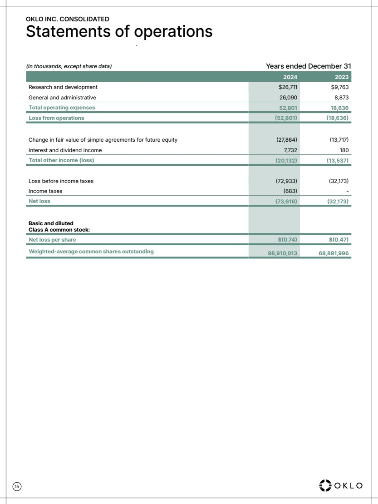</p></td><td width="7.7%" valign="middle" style="padding:0in 5.4pt 0in 5.4pt;width:7.7%;"><p style="margin:0in 0in .0001pt;"><font size="1" color="white" face="Arial" style="color:white;font-size:1.0pt;">15
2024 2023
Research and development $26,711 $9,763
General and administrative 26,090 8,873
Total operating expenses 52,801 18,636
Loss from operations (52,801) (18,636)
Change in fair value of simple agreements for future equity (27,864) (13,717)
Interest and dividend income 7,732 180
Total other income (loss) (20,132) (13,537)
Loss before income taxes (72,933) (32,173)
Income taxes (683) -
Net loss (73,616) (32,173)
Basic and diluted
Class A common stock:
Net loss per share $(0.74) $(0.47)
Weighted-average common shares outstanding 98,910,013 68,891,996
OKLO INC. CONSOLIDATED
Statements of operations
(in thousands, except share data) Years ended December 31</font></p></td></tr></table></div><div style="margin-left:2.6515151515151%;margin-right:2.65151515151515%;page-break-after:always;" ><div style="background-color:#000000;clear:both;height:2pt;border:0;margin:30pt 0pt 30pt 0pt;"></div></div><div align="center"><table border="0" cellspacing="0" cellpadding="0" style="width:100%;border-collapse:collapse;"><tr style="page-break-inside:avoid;"><td width="92.3%" valign="top" style="padding:0in 5.4pt 0in 5.4pt;width:92.3%;"><p align="center" style="margin:0in 0in .0001pt;text-align:center;">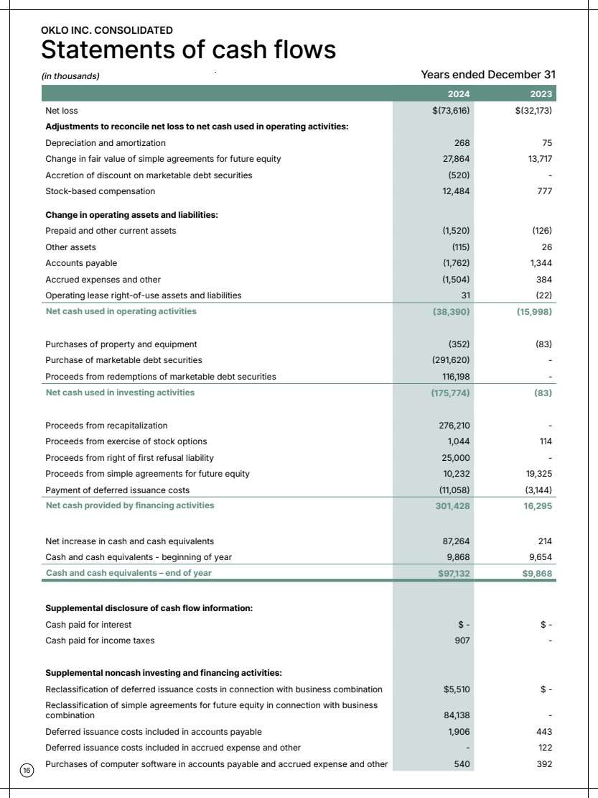</p></td><td width="7.7%" valign="middle" style="padding:0in 5.4pt 0in 5.4pt;width:7.7%;"><p style="margin:0in 0in .0001pt;"><font size="1" color="white" face="Arial" style="color:white;font-size:1.0pt;">16
2024 2023
Net loss $(73,616) $(32,173)
Adjustments to reconcile net loss to net cash used in operating activities:
Depreciation and amortization 268 75
Change in fair value of simple agreements for future equity 27,864 13,717
Accretion of discount on marketable debt securities (520) -
Stock-based compensation 12,484 777
Change in operating assets and liabilities:
Prepaid and other current assets (1,520) (126)
Other assets (115) 26
Accounts payable (1,762) 1,344
Accrued expenses and other (1,504) 384
Operating lease right-of-use assets and liabilities 31 (22)
Net cash used in operating activities (38,390) (15,998)
Purchases of property and equipment (352) (83)
Purchase of marketable debt securities (291,620) -
Proceeds from redemptions of marketable debt securities 116,198 -
Net cash used in investing activities (175,774) (83)
Proceeds from recapitalization 276,210 -
Proceeds from exercise of stock options 1,044 114
Proceeds from right of first refusal liability 25,000 -
Proceeds from simple agreements for future equity 10,232 19,325
Payment of deferred issuance costs (11,058) (3,144)
Net cash provided by financing activities 301,428 16,295
Net increase in cash and cash equivalents 87,264 214
Cash and cash equivalents - beginning of year 9,868 9,654
Cash and cash equivalents &#x2013; end of year $97,132 $9,868
Supplemental disclosure of cash flow information:
Cash paid for interest $ - $ -
Cash paid for income taxes 907 -
Supplemental noncash investing and financing activities:
Reclassification of deferred issuance costs in connection with business combination $5,510 $ -
Reclassification of simple agreements for future equity in connection with business
combination 84,138 -
Deferred issuance costs included in accounts payable 1,906 443
Deferred issuance costs included in accrued expense and other - 122
Purchases of computer software in accounts payable and accrued expense and other 540 392
OKLO INC. CONSOLIDATED
Statements of cash flows
(in thousands) Years ended December 31</font></p></td></tr></table></div><div style="margin-left:2.6515151515151%;margin-right:2.65151515151515%;page-break-after:always;" ><div style="background-color:#000000;clear:both;height:2pt;border:0;margin:30pt 0pt 30pt 0pt;"></div></div><div align="center"><table border="0" cellspacing="0" cellpadding="0" style="width:100%;border-collapse:collapse;"><tr style="page-break-inside:avoid;"><td width="92.3%" valign="top" style="padding:0in 5.4pt 0in 5.4pt;width:92.3%;"><p align="center" style="margin:0in 0in .0001pt;text-align:center;">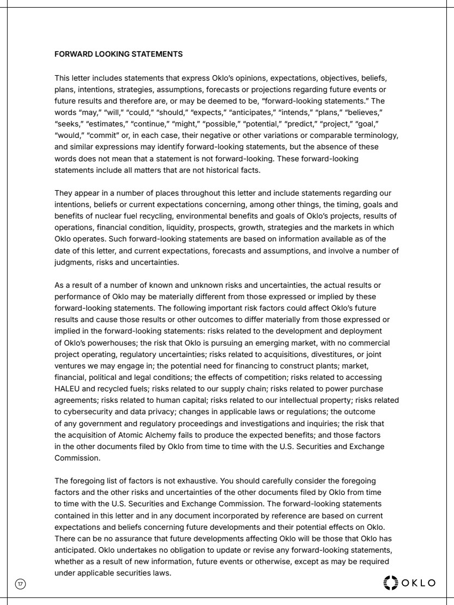</p></td><td width="7.7%" valign="middle" style="padding:0in 5.4pt 0in 5.4pt;width:7.7%;"><p style="margin:0in 0in .0001pt;"><font size="1" color="white" face="Arial" style="color:white;font-size:1.0pt;">17
This letter includes statements that express Oklo&#x2BC;s opinions, expectations, objectives, beliefs,
plans, intentions, strategies, assumptions, forecasts or projections regarding future events or
future results and therefore are, or may be deemed to be, &#x201C;forward-looking statements.&#x201D; The
words &#x201C;may,&#x201D; &#x201C;will,&#x201D; &#x201C;could,&#x201D; &#x201C;should,&#x201D; &#x201C;expects,&#x201D; &#x201C;anticipates,&#x201D; &#x201C;intends,&#x201D; &#x201C;plans,&#x201D; &#x201C;believes,&#x201D;
&#x201C;seeks,&#x201D; &#x201C;estimates,&#x201D; &#x201C;continue,&#x201D; &#x201C;might,&#x201D; &#x201C;possible,&#x201D; &#x201C;potential,&#x201D; &#x201C;predict,&#x201D; &#x201C;project,&#x201D; &#x201C;goal,&#x201D;
&#x201C;would,&#x201D; &#x201C;commit&#x201D; or, in each case, their negative or other variations or comparable terminology,
and similar expressions may identify forward-looking statements, but the absence of these
words does not mean that a statement is not forward-looking. These forward-looking
statements include all matters that are not historical facts.
They appear in a number of places throughout this letter and include statements regarding our
intentions, beliefs or current expectations concerning, among other things, the timing, goals and
benefits of nuclear fuel recycling, environmental benefits and goals of Oklo&#x2BC;s projects, results of
operations, financial condition, liquidity, prospects, growth, strategies and the markets in which
Oklo operates. Such forward-looking statements are based on information available as of the
date of this letter, and current expectations, forecasts and assumptions, and involve a number of
judgments, risks and uncertainties.
As a result of a number of known and unknown risks and uncertainties, the actual results or
performance of Oklo may be materially different from those expressed or implied by these
forward-looking statements. The following important risk factors could affect Oklo&#x2BC;s future
results and cause those results or other outcomes to differ materially from those expressed or
implied in the forward-looking statements: risks related to the development and deployment
of Oklo&#x2019;s powerhouses; the risk that Oklo is pursuing an emerging market, with no commercial
project operating, regulatory uncertainties; risks related to acquisitions, divestitures, or joint
ventures we may engage in; the potential need for financing to construct plants; market,
financial, political and legal conditions; the effects of competition; risks related to accessing
HALEU and recycled fuels; risks related to our supply chain; risks related to power purchase
agreements; risks related to human capital; risks related to our intellectual property; risks related
to cybersecurity and data privacy; changes in applicable laws or regulations; the outcome
of any government and regulatory proceedings and investigations and inquiries; the risk that
the acquisition of Atomic Alchemy fails to produce the expected benefits; and those factors
in the other documents filed by Oklo from time to time with the U.S. Securities and Exchange
Commission.
The foregoing list of factors is not exhaustive. You should carefully consider the foregoing
factors and the other risks and uncertainties of the other documents filed by Oklo from time
to time with the U.S. Securities and Exchange Commission. The forward-looking statements
contained in this letter and in any document incorporated by reference are based on current
expectations and beliefs concerning future developments and their potential effects on Oklo.
There can be no assurance that future developments affecting Oklo will be those that Oklo has
anticipated. Oklo undertakes no obligation to update or revise any forward-looking statements,
whether as a result of new information, future events or otherwise, except as may be required
under applicable securities laws.
FORWARD LOOKING STATEMENTS</font></p></td></tr></table></div><div style="margin-left:2.6515151515151%;margin-right:2.65151515151515%;page-break-after:always;" ><div style="background-color:#000000;clear:both;height:2pt;border:0;margin:30pt 0pt 30pt 0pt;"></div></div><div align="center"><table border="0" cellspacing="0" cellpadding="0" style="width:100%;border-collapse:collapse;"><tr style="page-break-inside:avoid;"><td width="92.3%" valign="top" style="padding:0in 5.4pt 0in 5.4pt;width:92.3%;"><p align="center" style="margin:0in 0in .0001pt;text-align:center;">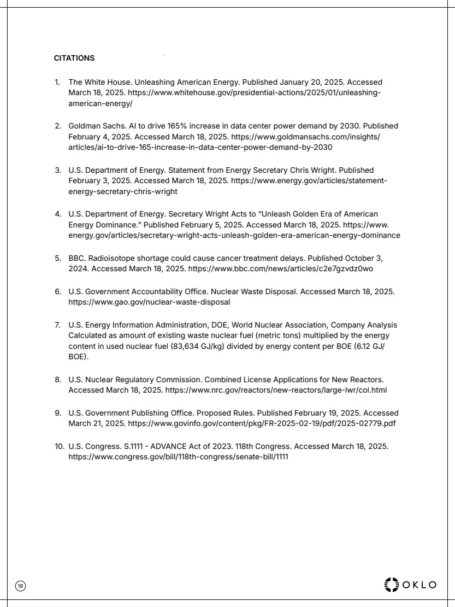</p></td><td width="7.7%" valign="middle" style="padding:0in 5.4pt 0in 5.4pt;width:7.7%;"><p style="margin:0in 0in .0001pt;"><font size="1" color="white" face="Arial" style="color:white;font-size:1.0pt;">18
1. The White House. Unleashing American Energy. Published January 20, 2025. Accessed
March 18, 2025. https://www.whitehouse.gov/presidential-actions/2025/01/unleashing-american-energy/
2. Goldman Sachs. AI to drive 165% increase in data center power demand by 2030. Published
February 4, 2025. Accessed March 18, 2025. https://www.goldmansachs.com/insights/
articles/ai-to-drive-165-increase-in-data-center-power-demand-by-2030
3. U.S. Department of Energy. Statement from Energy Secretary Chris Wright. Published
February 3, 2025. Accessed March 18, 2025. https://www.energy.gov/articles/statement-energy-secretary-chris-wright
4. U.S. Department of Energy. Secretary Wright Acts to &#x201C;Unleash Golden Era of American
Energy Dominance.&#x201D; Published February 5, 2025. Accessed March 18, 2025. https://www.
energy.gov/articles/secretary-wright-acts-unleash-golden-era-american-energy-dominance
5. BBC. Radioisotope shortage could cause cancer treatment delays. Published October 3,
2024. Accessed March 18, 2025. https://www.bbc.com/news/articles/c2e7gzvdz0wo
6. U.S. Government Accountability Office. Nuclear Waste Disposal. Accessed March 18, 2025.
https://www.gao.gov/nuclear-waste-disposal
7. U.S. Energy Information Administration, DOE, World Nuclear Association, Company Analysis
Calculated as amount of existing waste nuclear fuel (metric tons) multiplied by the energy
content in used nuclear fuel (83,634 GJ/kg) divided by energy content per BOE (6.12 GJ/
BOE).
8. U.S. Nuclear Regulatory Commission. Combined License Applications for New Reactors.
Accessed March 18, 2025. https://www.nrc.gov/reactors/new-reactors/large-lwr/col.html
9. U.S. Government Publishing Office. Proposed Rules. Published February 19, 2025. Accessed
March 21, 2025. https://www.govinfo.gov/content/pkg/FR-2025-02-19/pdf/2025-02779.pdf
10. U.S. Congress. S.1111 - ADVANCE Act of 2023. 118th Congress. Accessed March 18, 2025.
https://www.congress.gov/bill/118th-congress/senate-bill/1111
CITATIONS</font></p></td></tr></table></div><div style="margin-left:2.6515151515151%;margin-right:2.65151515151515%;page-break-after:always;" ><div style="background-color:#000000;clear:both;height:2pt;border:0;margin:30pt 0pt 30pt 0pt;"></div></div><div align="center"><table border="0" cellspacing="0" cellpadding="0" style="width:100%;border-collapse:collapse;"><tr style="page-break-inside:avoid;"><td width="92.3%" valign="top" style="padding:0in 5.4pt 0in 5.4pt;width:92.3%;"><p align="center" style="margin:0in 0in .0001pt;text-align:center;"></p></td><td width="7.7%" valign="middle" style="padding:0in 5.4pt 0in 5.4pt;width:7.7%;"><p style="margin:0in 0in .0001pt;"><font size="1" color="white" face="Arial" style="color:white;font-size:1.0pt;">19
Investor Relations
investors@oklo.com
Communications &amp; Media
media@oklo.com
oklo.com
Press Releases &amp; Media Features</font></p></td></tr></table></div><div style="margin-left:2.6515151515151%;margin-right:2.65151515151515%;page-break-after:avoid;" ><div style="background-color:#000000;clear:both;height:2pt;border:0;margin:30pt 0pt 30pt 0pt;"></div></div></div></div></body></html>
</TEXT>
</DOCUMENT>
